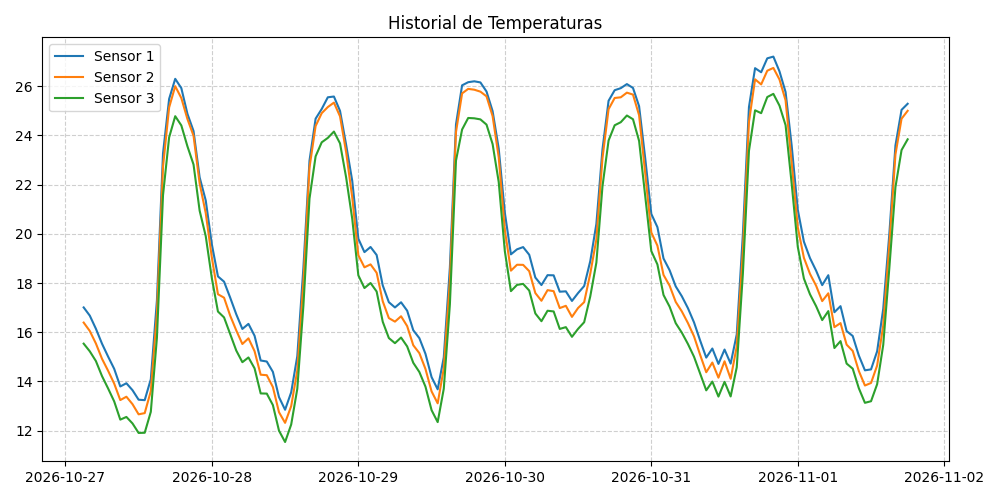
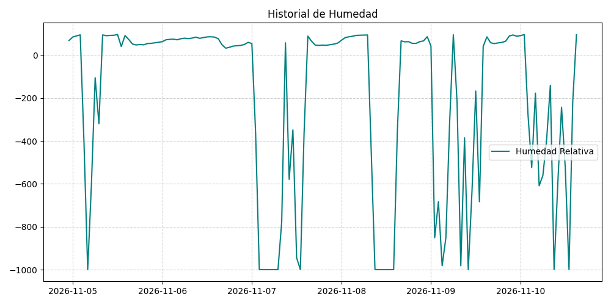

Última actualización: 2026-11-12 08:55:03 Estaciones: Zona Tláhuac - Chalco
Como analista de hardware IoT procesando este lote de datos, aquí tienes el informe basado en las lecturas de los sensores:
Los picos máximos de radiación (en todas sus vertientes: Visible, Infrarroja y UV) se concentran invariablemente en la franja horaria de la tarde, específicamente entre las 17:00 UTC y las 19:00 UTC. * Máximo absoluto registrado: * Radiación Vis: ~727.44 (06 de noviembre, 18:00 UTC) * Radiación IR: ~6,297.42 (06 de noviembre, 18:00 UTC) * Radiación UV: ~2.50 (06 de noviembre, 18:00 UTC)
Se identifican anomalías críticas de hardware e inconsistencias en la telemetría que apuntan a fallas en los sensores:
* Sensor de Humedad (Falla Crítica / Rango Fuera de Escala): Presenta lecturas negativas imposibles y altamente anómalas (ej. -360.92, -776.88, y picos constantes de -999.90). Esto indica un cortocircuito, pérdida de calibración o fallo en el ADC del módulo higrómetro, especialmente notable durante las madrugadas del 7, 8, 9, 10 y 11 de noviembre.
* Sensores de Temperatura (Desviación Térmica): Hay una diferencia consistente y sistemática entre el temp_sensor1, temp_sensor2 y temp_sensor3 de aproximadamente 1.5 °C a 2 °C bajo las mismas condiciones ambientales (siendo el sensor3 el más frío). Esto sugiere una degradación en la tornillería térmica o mal contacto en la masilla disipadora del sensor 3.

